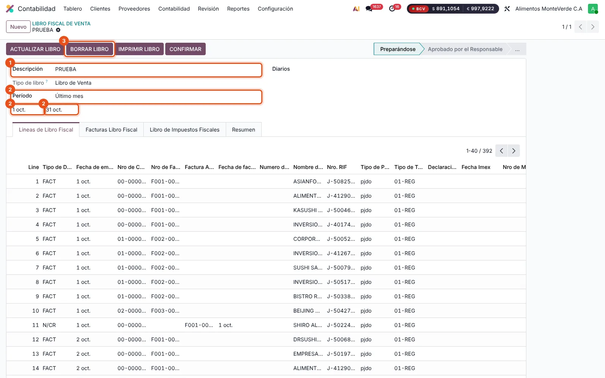
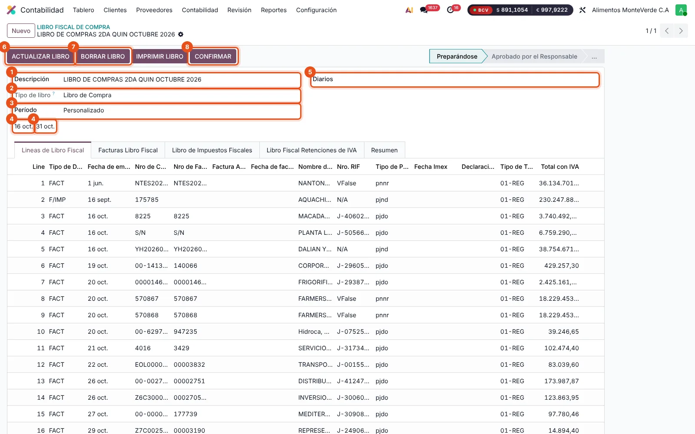
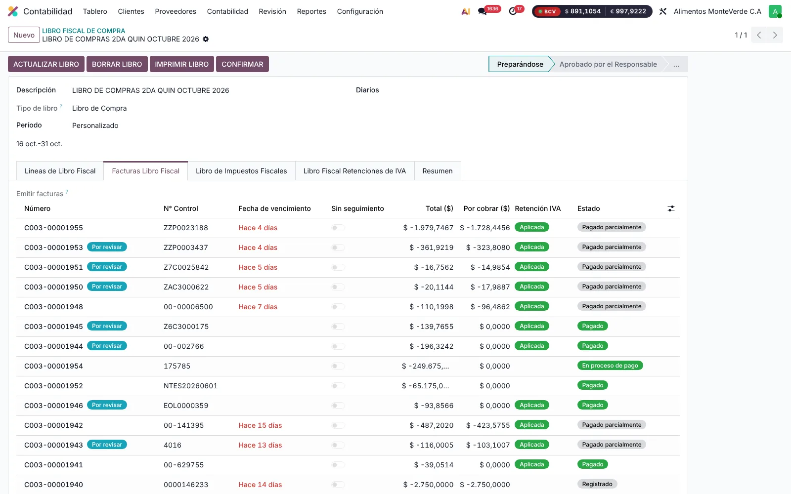
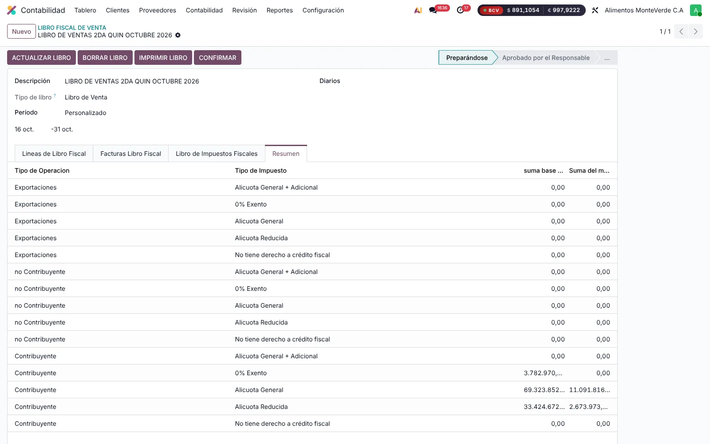
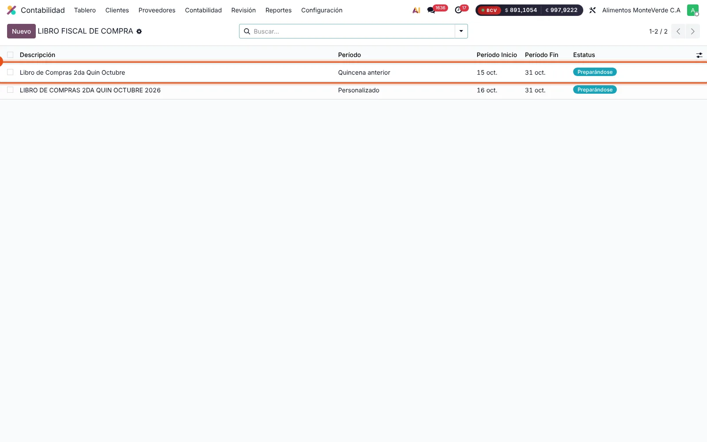

Libros de compras y ventas: cómo crearlos en Odoo
Instrucciones para crear, revisar y confirmar los libros fiscales de cada quincena, con capturas de producción del 03/11/2026.
1Cómo funciona el libro
- Un libro por compañía (RIF). AMV tiene una sola compañía. Las sucursales (Valencia, Caracas, Lecherías) no son compañías: son el campo «Sucursal» de cada factura. Con el campo «Diarios» vacío, el libro toma las facturas de todas las sucursales.
- Libro de ventas: toma las facturas y notas de los diarios fiscales (FACTURAS SUCURSAL CARACAS, VALENCIA y LECHERIAS). Los diarios «FACTURAS NO FISCALES» no entran.
- Libro de compras: toma las facturas de proveedores del diario FACTURAS PROVEEDORES y las retenciones de IVA. El diario GASTOS NO FISCALES no entra.
- Cada factura queda en un solo libro. Si un libro ya tomó una factura, otro libro del mismo período no la trae. Por eso un libro de prueba deja vacío al definitivo.
3Antes de crear un libro: quitar los de prueba
Un libro de prueba retiene las facturas de su período. Antes de crear el definitivo hay que liberarlas y borrar el libro.
- Abre el libro de prueba y pulsa BORRAR LIBRO. Quita sus líneas y libera las facturas.
- En la lista de libros, marca el libro y elimínalo con Acciones › Eliminar.

- Libro de ventas «PRUEBA».
- «Último mes»: tiene todo octubre, y retiene hoy las 155 facturas del 01 al 15/10.
- BORRAR LIBRO.
4Crear el libro de la quincena
- En Libro Fiscal de Compra o de Venta, pulsa Nuevo.
- Descripción: por ejemplo «LIBRO DE COMPRAS 1RA QUIN NOVIEMBRE 2026».
- Período: «Personalizado» y escribe las fechas: del 1 al 15 o del 16 al último día del mes.
- Diarios: déjalo vacío para que entren todas las sucursales.
- Guarda y pulsa ACTUALIZAR LIBRO.
La pantalla muestra las fechas, pero al guardar quedan vacías (defecto de la localización, ya reportado). Hasta que se corrija, usa siempre «Personalizado» con las fechas escritas a mano.

LIBRO DE COMPRAS 2DA QUIN OCTUBRE 2026, bien creado
- Descripción.
- Tipo de libro: Libro de Compra.
- Período: Personalizado.
- Fechas 16 oct. – 31 oct.
- Diarios vacío: todas las sucursales.
- ACTUALIZAR LIBRO: trae las facturas del período.
- BORRAR LIBRO: quita las líneas y libera las facturas.
- CONFIRMAR: pasa a «Aprobado por el Responsable».
5Revisar antes de confirmar
- Facturas Libro Fiscal: que estén todas las del período y ninguna de otra quincena.
- Libro Fiscal Retenciones de IVA (compras): las retenciones del período.
- Resumen: bases e impuestos por tipo de operación y alícuota.
- RIF de cada línea: en el libro de compras de la 2.ª quincena de octubre, NANTONG y FARMERS (proveedores del exterior sin RIF) salen con RIF «VFalse». Hay que completar su ficha o revisar cómo deben salir antes de confirmar.


6Imprimir, confirmar y cerrar
| Botón | Qué hace | Estado al que pasa |
|---|---|---|
| IMPRIMIR LIBRO | PDF del libro | No cambia |
| CONFIRMAR | Lo aprueba el responsable; ya no se puede actualizar | Aprobado por el Responsable |
| HECHO | Se marca después de declarar | Enviado al Seniat |
| CANCELAR | Anula un libro aprobado o enviado | Cancelado |
| ESTABLECER PARA BORRADOR | Desde cancelado, para corregirlo | Preparándose |
7Libro por sucursal (opcional)
Para un libro por sucursal, se crea un libro por cada una y en Diarios se pone solo el diario de esa sucursal (por ejemplo FACTURAS SUCURSAL CARACAS). Como cada factura solo puede estar en un libro, los libros por sucursal reemplazan al global: no se pueden tener los dos con las mismas facturas. La declaración de IVA es por RIF, así que lo normal es el libro global.
8Estado de los libros de octubre (03/11/2026)
| Libro | Período | Contenido | Qué hacer |
|---|---|---|---|
| LIBRO DE COMPRAS 2DA QUIN OCTUBRE 2026 | 16/10–31/10 | 19 facturas, todas las de la quincena | Revisar RIF «VFalse» y confirmar |
| LIBRO DE VENTAS 2DA QUIN OCTUBRE 2026 | 16/10–31/10 | 237 facturas | Revisar y confirmar |
| Libro de Compras 2da Quin Octubre (el primero) | 15/10–31/10 | 1 factura del 15/10 | BORRAR LIBRO y eliminar |
| PRUEBA (ventas) | 01/10–31/10 | 155 facturas del 01 al 15/10 | BORRAR LIBRO y eliminar |

- El primer libro de compras va desde el 15 oct.: toma una factura de la 1.ª quincena (C003-00001933).
Si la 1.ª quincena de octubre se declara desde Odoo, después de borrar esos dos libros hay que crear los libros de compras y ventas del 01/10 al 15/10. Si se declaró desde Profit, solo hay que borrarlos.